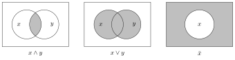
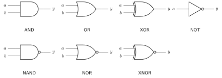
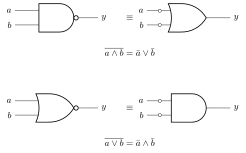
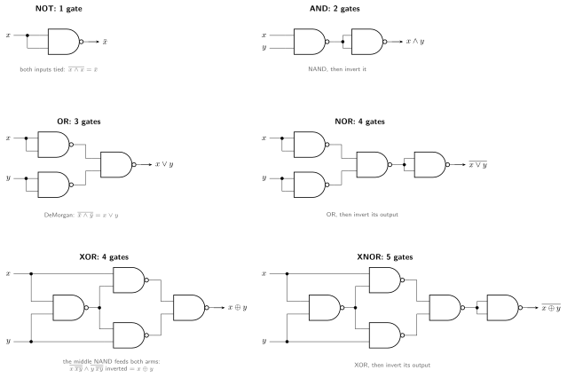

Boolean algebra describes the logic functions from which we build digital systems. It is a branch of algebra over where the variables can only take True or False values: \(\{1, 0\}\) with three fundamental operators:
Three common compound gates derive from these:
Below is a Truth Table for the above operators:
| x | y | AND | OR | NOT(x) | NAND | NOR | XNOR |
|---|---|---|---|---|---|---|---|
| 0 | 0 | 0 | 0 | 1 | 1 | 1 | 1 |
| 0 | 1 | 0 | 1 | 1 | 1 | 0 | 0 |
| 1 | 0 | 0 | 1 | 0 | 1 | 0 | 0 |
| 1 | 1 | 1 | 1 | 0 | 0 | 0 | 1 |
XNOR (\(\overline{x \oplus y}\), aka equivalence) completes the compound set, 1 if both inputs are the same.
George Boole introduced the algebra in The Mathematical Analysis of Logic (1847) and An Investigation of the Laws of Thought (1854). In the 1930s Claude Shannon showed the two-element algebra models switching circuits, making it the working mathematics of digital hardware (“switching algebra” and “Boolean algebra” are used interchangeably in circuit design).
A variable or its complement in an expression is a literal (e.g. \(a \land \bar{b}\) has two: \(a\) and \(\bar{b}\)). The algebra lets us simplify expressions, put them in normal form, and test two expressions for equivalence.
Everything in the algebra follows from a small axiomatic core, the null, identity, and negation laws:
\[ 0 \land x = 0 \qquad 1 \lor x = 1 \qquad 1 \land x = x \qquad 0 \lor x = x \qquad \bar{0} = 1 \]
The working set of identities derived from them (AND-form | OR-form), for all \(x, y, z \in \{0, 1\}\):
| Property | AND form | OR form |
|---|---|---|
| Identity | \(x \land 1 = x\) | \(x \lor 0 = x\) |
| Null | \(x \land 0 = 0\) | \(x \lor 1 = 1\) |
| Idempotence | \(x \land x = x\) | \(x \lor x = x\) |
| Complement | \(x \land \bar{x} = 0\) | \(x \lor \bar{x} = 1\) |
| Involution | \(\overline{\bar{x}} = x\) | (self-dual) |
| Commutative | \(x \land y = y \land x\) | \(x \lor y = y \lor x\) |
| Associative | \(x \land (y \land z) = (x \land y) \land z\) | \(x \lor (y \lor z) = (x \lor y) \lor z\) |
| Distributive | \(x \land (y \lor z) = (x \land y) \lor (x \land z)\) | \(x \lor (y \land z) = (x \lor y) \land (x \lor z)\) |
| Absorption | \(x \land (x \lor y) = x\) | \(x \lor (x \land y) = x\) |
| Combining | \((x \land y) \lor (x \land \bar{y}) = x\) | \((x \lor y) \land (x \lor \bar{y}) = x\) |
| Consensus | \(xy \lor \bar{x}z \lor yz = xy \lor \bar{x}z\) | \((x{\lor}y)(\bar{x}{\lor}z)(y{\lor}z) = (x{\lor}y)(\bar{x}{\lor}z)\) |
| DeMorgan’s | \(\overline{x \land y} = \bar{x} \lor \bar{y}\) | \(\overline{x \lor y} = \bar{x} \land \bar{y}\) |
Notes:
| x | y | \(\overline{x \land y}\) | \(\bar{x} \lor \bar{y}\) |
|---|---|---|---|
| 0 | 0 | 1 | 1 |
| 0 | 1 | 1 | 1 |
| 1 | 0 | 1 | 1 |
| 1 | 1 | 0 | 0 |
Venn diagrams give a second visual check: \(\land\) is intersection, \(\lor\) is union, \(\bar{x}\) is the outside. Absorption, DeMorgan, and the complement laws can all be read off the shaded regions.

Every identity above comes as a matched AND/OR pair, and that is no accident. The principle of duality: if an expression is true, so is the one obtained by swapping every \(\land \leftrightarrow \lor\) and every \(0 \leftrightarrow 1\). Duality holds for the axioms, so it holds for everything derived from them: prove one form and its dual comes free.
An operation unchanged by this swap is self-dual: NOT and the identity are, and so is majority \((x \land y) \lor (y \land z) \lor (z \land x)\). No binary operation depending on both inputs is self-dual, and compositions of self-dual operations stay self-dual.
The idea extends from identities to whole functions. The dual \(f^D\) swaps every \(\land \leftrightarrow \lor\) and \(0 \leftrightarrow 1\): \[ f = (a \land b) \lor (b \land c) \;\implies\; f^D = (a \lor b) \land (b \lor c). \]
The dual applied to complemented inputs equals the complement of the function, the generalized DeMorgan’s theorem, and the basis for building a CMOS pull-up network as the dual of its pull-down: \[ f^D(\bar{a}, \bar{b}, \ldots) = \overline{f(a, b, \ldots)}. \]
To complement an expression directly: take the dual, then complement each literal. E.g. \(\overline{(a \land b) \lor (\bar{a} \land c)} = (\bar{a} \lor \bar{b}) \land (a \lor \bar{c})\).
To compare two expressions, put both in normal form, a sum of products (ORed AND-terms). Each product term matches one truth-table row where the output is \(1\). For the 3-input majority function (true when ≥2 inputs are high): \[ f(a, b, c) = (\bar{a}bc) \lor (a\bar{b}c) \lor (ab\bar{c}) \lor (abc) \]
Any expression reaches normal form by Shannon expansion about each variable: \[ f(\ldots, x_i, \ldots) = \big(x_i \land f(\ldots, 1, \ldots)\big) \lor \big(\bar{x_i} \land f(\ldots, 0, \ldots)\big). \]
A minterm \(m_j\) is a product using every variable once (true or complemented), true on exactly row \(j\). There are \(2^n\) of them:
| \(a\) | \(b\) | \(c\) | minterm | |
|---|---|---|---|---|
| 0 | 0 | 0 | \(\bar{a}\,\bar{b}\,\bar{c}\) | \(m_0\) |
| 1 | 0 | 1 | \(a\,\bar{b}\,c\) | \(m_5\) |
| 1 | 1 | 1 | \(a\,b\,c\) | \(m_7\) |
Each truth table has exactly one canonical SOP and one canonical POS, the basis for equivalence checking. There are \(2^{2^n}\) functions of \(n\) variables (16 for \(n=2\), 256 for \(n=3\)).
Canonical forms are rarely minimal. Reducing to a minimal SOP/POS (fewest terms, fewest literals) is logic minimization.
Material implication \(x \rightarrow y =
\bar{x} \lor y\) (it reappears in SVA assertions as
|->, false only when \(x=1,
y=0\)). Deriving that form from its truth table is the whole
workflow in miniature: write the canonical SOP, then let the identities
shrink it.
| \(x\) | \(y\) | \(x \rightarrow y\) | minterm |
|---|---|---|---|
| 0 | 0 | 1 | \(\bar{x}\,\bar{y}\) |
| 0 | 1 | 1 | \(\bar{x}\,y\) |
| 1 | 0 | 0 | |
| 1 | 1 | 1 | \(x\,y\) |
\[ x \rightarrow y = \bar{x}\bar{y} \lor \bar{x}y \lor xy = \bar{x}(\bar{y} \lor y) \lor xy = \bar{x} \lor xy = (\bar{x} \lor x)(\bar{x} \lor y) = \bar{x} \lor y \]
(distribute, complement, distribute again; the last two steps are the identity \(a \lor \bar{a}b = a \lor b\)).
The core move is the combining theorem applied repeatedly: \(PQ \lor P\bar{Q} = P\). Each application drops a literal. An implicant is a product term that implies the function; a prime implicant is one that cannot lose any further literal. A minimal SOP is a sum of prime implicants covering every \(1\).
A K-map arranges the truth table so cells differing in one variable are adjacent, including wraparound. Combining adjacent minterms becomes “circle adjacent \(1\)s and drop the variable that changes”. Columns and rows follow Gray-code order. For \(f = abc \lor \bar{a}bc \lor ab\bar{c}\):
| \(a \backslash bc\) | 00 | 01 | 11 | 10 |
|---|---|---|---|---|
| 0 | 0 | 0 | 1 | 0 |
| 1 | 0 | 1 | 1 | 1 |
Two groups of two cover all the \(1\)s: column \(bc\) (varies \(a\)) gives \(bc\); the \(a{=}1\) pair in columns \(11,10\) (varies \(c\)) gives \(ab\). So \(f = bc \lor ab\).
Grouping rules:
Input combinations that cannot occur (or whose output is irrelevant) are marked \(X\) and may be grouped as either \(0\) or \(1\), whichever enlarges a group. They cost nothing if left uncovered.
K-maps are practical to about 4 variables. Synthesis tools instead use algorithms: Quine-McCluskey (exhaustive tabular prime-implicant generation), Espresso (heuristic SOP minimizer), or Binary Decision Diagrams (a canonical graph form manipulated directly).
Deciding whether any input makes a formula true is Boolean satisfiability (SAT), the first problem proved NP-complete. Modern equivalence checkers and formal verification tools are built on SAT solvers alongside BDDs.
A logic function is drawn as a logic diagram of gate symbols. To convert an expression to a diagram, pick the top-level operator, draw that gate, and recurse on its arguments; to read a diagram back, label each gate’s output working from the inputs out.

An inversion bubble on a gate input or output replaces an explicit inverter.

Bubble pushing is DeMorgan in gate form: complementing all ports of an AND yields an OR and vice versa. Sliding bubbles through a network this way converts AND/OR logic into all-NAND or all-NOR form. CMOS only provides inverting gates, so NAND and NOR are the natural primitives.
A set of operators is functionally complete if it can build any function. \(\{\land, \lor, \lnot\}\) is complete (canonical SOP uses only these). Crucially, NAND alone and NOR alone are each universal, which is why a single gate type can implement any logic in silicon.

\[ a \oplus b = (a \land \bar{b}) \lor (\bar{a} \land b), \qquad \overline{a \oplus b} = (a \land b) \lor (\bar{a} \land \bar{b}). \]
XOR is commutative and associative, with \(x \oplus 0 = x\), \(\;x \oplus 1 = \bar{x}\), \(\;x \oplus x = 0\). A chain \(x_1 \oplus \cdots \oplus x_n\) gives parity (\(1\) iff an odd number of inputs are \(1\)). XNOR is equivalence, true iff the inputs match.
Reading \(0, 1\) as integers gives arithmetic equivalents, useful in proofs and in software without native bit operations: \[ x \land y = xy = \min(x,y) \qquad x \lor y = x + y - xy = \max(x,y) \qquad \bar{x} = 1 - x \] XOR is addition modulo 2: add the bits as integers and keep the remainder mod 2, so \(1 \oplus 1 = 0\). Taking \(\oplus\) as addition and \(\land\) as multiplication, the set \(\{0, 1\}\) satisfies every field axiom, giving the two-element Galois Field \(GF(2)\), the smallest field there is.
Since \(x \oplus x = 0\), every element is its own negative: addition and subtraction are the same operation. Because bits form a field, all of linear algebra (vectors, matrices, polynomials) works over bits, which hardware exploits directly:
Logic manipulates truth values; datapaths interpret whole bit vectors as numbers, so the encodings deserve the same care as the operators. A radix-\(r\) positional number weights digit \(i\) by \(r^i\); hardware uses \(r=2\), with octal and hexadecimal as human-readable shorthand:
| Radix | Name | Digits | Use |
|---|---|---|---|
| 2 | binary | 0-1 | what the hardware stores |
| 8 | octal | 0-7 | 3-bit groups (Unix permissions, legacy 12/36-bit machines) |
| 10 | decimal | 0-9 | human arithmetic |
| 16 | hexadecimal | 0-9, A-F | 4-bit nibbles, standard for addresses and registers |
An \(N\)-bit unsigned number covers
\(0\) to \(2^N-1\): \[
1011_2 = 1{\cdot}2^3 + 0{\cdot}2^2 + 1{\cdot}2^1 + 1{\cdot}2^0 = 11_{10}
\] Because \(8 = 2^3\) and \(16 = 2^4\), conversion to octal or hex is
pure regrouping of bits from the right, no arithmetic: \[
11011101_2 =
\underbrace{011}_{3}\underbrace{011}_{3}\underbrace{101}_{5} = 335_8 =
\underbrace{1101}_{D}\underbrace{1101}_{D} = \mathrm{DD}_{16} = 221_{10}
\] Hex won because word sizes settled on multiples of 4 bits;
octal survives where fields are 3 bits wide
(chmod 755).
The standard signed encoding gives the most significant bit weight \(-2^{N-1}\) instead of \(+2^{N-1}\). Its decisive property is that ordinary binary addition works for any signs, with no special casing.
\[ 5 = 0101, \qquad -5 = \overline{0101} + 1 = 1010 + 1 = 1011 \] \[ 5 + (-5) = 0101 + 1011 = 10000 \to \text{drop carry} \to 0000 \checkmark \]
assign neg = ~a + 1'b1;assign out = {{(M){in[N-1]}}, in};Comparison with the alternatives:
| System | Range (\(N\) bits) | Zeros | Addition |
|---|---|---|---|
| Unsigned | \([0,\, 2^N-1]\) | 1 | direct |
| Two’s complement | \([-2^{N-1},\, 2^{N-1}-1]\) | 1 | direct, same hardware as unsigned |
| Sign/magnitude | \([-(2^{N-1}-1),\, 2^{N-1}-1]\) | 2 | needs sign-comparison logic |
Signed overflow happens only when adding two same-signed operands and the result sign differs. Carry-out of the MSB is not a reliable signed-overflow indicator.
assign overflow = (a[W-1] == b[W-1]) && (sum[W-1] != a[W-1]);An implied binary point splits integer and fractional bits.
Ua.b is unsigned with \(a\) integer and \(b\) fractional bits; Qa.b is
the signed (two’s complement) form. \[
0110.1100\ (Q4.4) = 2^2 + 2^1 + 2^{-1} + 2^{-2} = 6.75
\] Negatives reuse two’s complement, so a plain integer adder
works unchanged; the point position is interpretation only. Resolution
is the grid spacing (\(2^{-b}\));
accuracy is the worst-case error, \(\Delta/2\) for round-to-nearest versus
\(\Delta\) for truncation.
| Code | Mapping | Property |
|---|---|---|
| BCD | each decimal digit in its own 4 bits (\(59 \to 0101\,1001\)) | exact decimal, wastes codes \(1010\) to \(1111\) |
| Excess-3 | BCD digit \(+3\) | self-complementing (9’s complement is bitwise NOT) |
| Gray | successive values differ in one bit (\(00,01,11,10\)) | no multi-bit transitions, safe for pointers and encoders |
Gray conversion is pure XOR:
gray = bin ^ (bin >> 1), inverse is a prefix XOR.
Author: Sai Govardhan (saigov14@gmail.com) ## References
Textbooks
MIT License
Copyright (c) 2025 Sai Govardhan (saigov14@gmail.com)
Permission is hereby granted, free of charge, to any person obtaining a copy
of this software and associated documentation files (the "Software"), to deal
in the Software without restriction, including without limitation the rights
to use, copy, modify, merge, publish, distribute, sublicense, and/or sell
copies of the Software, and to permit persons to whom the Software is
furnished to do so, subject to the following conditions:
The above copyright notice and this permission notice shall be included in all
copies or substantial portions of the Software.
THE SOFTWARE IS PROVIDED "AS IS", WITHOUT WARRANTY OF ANY KIND, EXPRESS OR
IMPLIED, INCLUDING BUT NOT LIMITED TO THE WARRANTIES OF MERCHANTABILITY,
FITNESS FOR A PARTICULAR PURPOSE AND NONINFRINGEMENT. IN NO EVENT SHALL THE
AUTHORS OR COPYRIGHT HOLDERS BE LIABLE FOR ANY CLAIM, DAMAGES OR OTHER
LIABILITY, WHETHER IN AN ACTION OF CONTRACT, TORT OR OTHERWISE, ARISING FROM,
OUT OF OR IN CONNECTION WITH THE SOFTWARE OR THE USE OR OTHER DEALINGS IN THE
SOFTWARE.